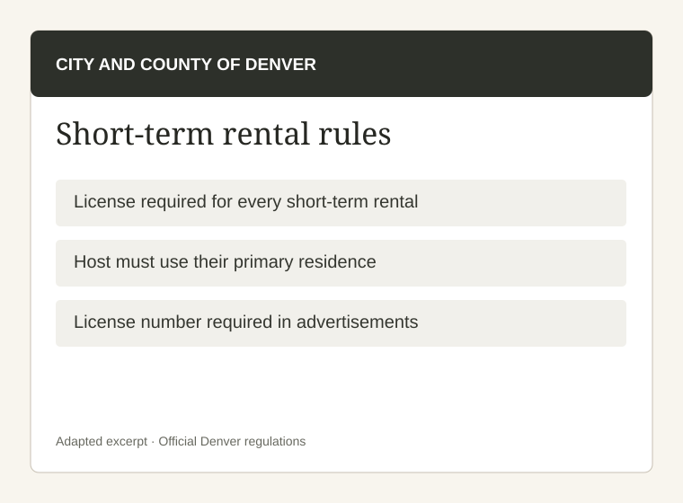
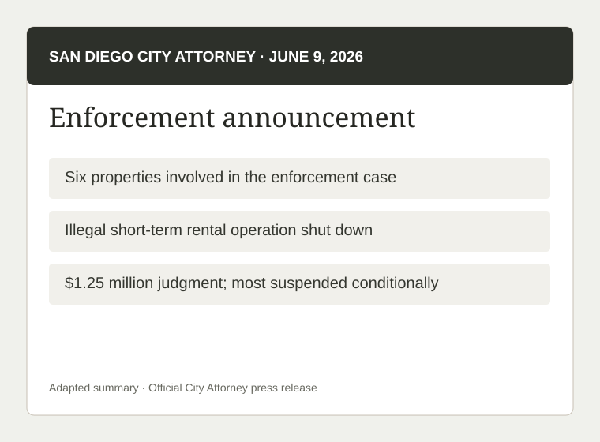
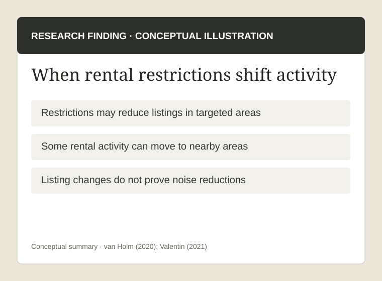

Set clear rules
Communicate enforceable noise, parking, occupancy and safety standards and a local contact where legally permitted.
When short-term rentals disrupt a neighborhood, is the problem the properties themselves—or how they are used and managed?

Tourism is an important part of Corpus Christi's economy. Short-term rentals provide places for visitors to stay and income for local property owners. But residents have raised concerns about loud parties, trespassing, overcrowding, and other disturbances at some rentals.
The problem is not simply that short-term rentals exist. It is how to stop disruptive behavior while allowing responsible owners to keep operating.
At the August 25, 2026 meeting, residents described disturbances around short-term rentals. Police Chief Mike Markle reported 39 related calls in recent months, while noting that not every incident met the threshold for a noise citation (City of Corpus Christi, 2026b).
The city's response focused on restricting where and how many rentals could receive permits. But those restrictions do not directly address disruptive conduct at properties already operating (City of Corpus Christi, 2026a).
The question is whether Corpus Christi should focus less on limiting responsible rentals and more on consistently enforcing rules against documented disturbances.
Reported incident volume · Corpus Christi
Reported calls are not the same as 39 confirmed code violations or 39 noise citations.

Denver generally requires short-term rentals to be in the operator's primary residence, meaning where they normally live. Operators must be licensed; the city monitors online listings and investigates unlicensed rentals. Monitoring can strengthen compliance, but licensing compliance alone does not establish that neighborhood noise has declined (Warren, 2024).

A published analysis estimates roughly 90% short-term rental compliance in Denver. The measure concerns regulatory compliance, not a verified reduction in noise complaints.
Read the published analysis| Advantages | Disadvantages |
|---|---|
| Licensing identifies legal operators; online monitoring finds violations; consistent enforcement encourages compliance. | Investigations cost staff time; primary-residence rules restrict investment properties; compliance does not prove fewer disturbances. |
| Positive for Corpus Christi: Monitor listings and follow up on repeat violations. | Negative for Corpus Christi: A primary-residence requirement could limit responsible owners without addressing guests' conduct. |

San Diego caps whole-home short-term rental licenses at 1% of housing units across most of the city, with a 30% cap in a heavily visited beach community. In June 2026, the City Attorney announced a judgment involving six unlicensed rental properties and related safety violations: $100,000 in penalties and costs, with $1.15 million suspended subject to compliance. This was not a noise enforcement case; its relevance is the city's documented, targeted enforcement (City of San Diego, n.d.; Office of the City Attorney, 2026).

Most of San Diego: 1%Mission Beach: 30%
The caps apply to specified whole-home short-term rental licensing categories and are not measurements of neighborhood noise.
Review official licensing rules| Advantages | Disadvantages |
|---|---|
| Investigations identify unlawful activity; documented violations can lead to enforceable consequences. | Legal action takes resources; rental caps constrain some owners; licensing enforcement is not itself proof of fewer noise incidents. |
| Positive for Corpus Christi: Investigate repeat complaints and apply proportionate consequences where authorized. | Negative for Corpus Christi: Copying large penalties or strict caps could burden responsible operators. |
Maximum licenses in relevant whole-home rental categories
How the announced amount was structured

Research on New Orleans found that short-term rental restrictions initially reduced activity in some areas, but some listings later appeared in nearby residential neighborhoods or reductions proved temporary. This describes changes in rental listings, not a demonstrated shift in noise complaints (van Holm, 2020; Valentin, 2021).

Research into New Orleans' regulations examines the impact on short-term rental activity and shows why policy evaluation should consider nearby neighborhoods and longer-term changes. These studies do not demonstrate that noise complaints migrated.
Read the journal study| Advantages | Disadvantages |
|---|---|
| Targeted limits may reduce rental concentration and protect particular residential areas. | Listings may move elsewhere; effects can fade; lower rental density does not prove reduced disturbances. |
| Positive for Corpus Christi: Consider narrow density limits if concentration itself is demonstrably harmful. | Negative for Corpus Christi: Broad restrictions could relocate activity while leaving disruptive behavior unaddressed. |
Corpus Christi should prioritize consistent enforcement of its existing short-term rental regulations and revise specific standards where necessary to address documented disturbances. This would hold irresponsible guests and property owners accountable while protecting responsible businesses from unnecessary restrictions.
Communicate enforceable noise, parking, occupancy and safety standards and a local contact where legally permitted.
Investigate complaints and apply fair escalating penalties, suspension and appeals where authorized.
Track verified complaints, repeat incidents and response times; revise narrowly based on evidence.
Texas state-law limits on local authority must be evaluated before implementing any new rule.